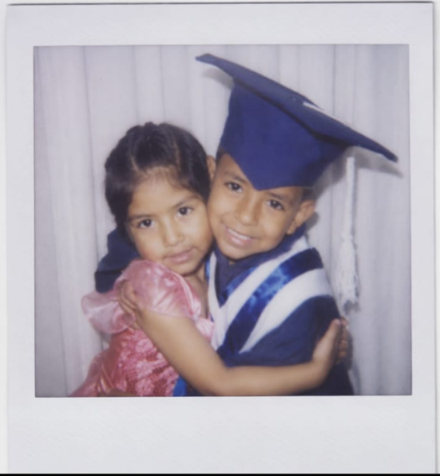

Dianota · Rubí · Luna · Batman · Iguanita

🎶 Para escuchar este día como se debe: "Feliz Cumpleaños" de Diomedes Díaz, claro que seeee
Dianita, hoy esss, claro que siiiii, hoy esss el dia en que nacisteeeee vamoooooo y quiero que sepas, de una vez por todas, cuánto te quiero.
Te quiero así como Batman tiene su lado oscuro y su lado de héroe. Te quiero así como una iguana cambia de color sin dejar de ser ella misma (yo se que era el camaleon pero tu eres una iguana, lo se, se tu secreto). Te quiero como princesa, aunque a veces no lo creas. Te quiero con cada una de esas "dobles personalidades" que yo mismo me invento para describirte, porque ninguna sola alcanza. Y te sigo queriendo igual cuando casi no hablamos, o cuando me dejas en visto (posdata: yo se que hay veces soy yo, incluso ayer jajaj mala mia, estaba con mis familiares y no me dio tiempo de contestar, perdoname la vida, te prometo un audio de minimo 5 minutos).
Que tus sueños se cumplan de la mano de Dios.Quiero que sepas que para mí ya eres un orgullo para tu familia. La real es que siento que ya lo eres, aunque por algún motivo no te guste escuchar eso. Y entiendo que quizás sientas que todo lo que te he venido diciendo en esta carta son solo palabras, las mismas que has oído mil veces de mil personas distintas, y que seguro pienses "ay sí, ajá, ya cállate, mejor me pongo a hacer otra cosa que leer a este mrk".
Pero aun así, desde Colombia, aunque tú estés en Perú, quiero que sepas que te quiero mucho. Y repito: todo lo que te digo, que te ves linda, que eres inteligente, es verdad. Así lo siento yo. Y si tú dices que no, que no es suficiente, que no vale para nada, que no sabes qué decir, que es pura palabrería barata… igual quiero que sepas que es lo que siento de verdad, suene como suene.
Te quiero mucho aunque no lo creas, aunque pienses que esto está sacado de una IA, o de frases de internet, o que es la típica frase que diría cualquier hombre. Para mí estos sentimientos hacia ti son reales, y sin importar lo que pase, te voy a seguir queriendo así tengamos 1.722 km de distancia (sí, lo busqué). Te voy a seguir queriendo por siempre.
Espero que la pases súper en tu día. Sé que esto que te doy con esta página web es poco, pero es lo mejor que sé hacer para ti. Y bueno, ya sabes: 1) no tengo plata jajajaja, y 2) vivo re lejos jajaja. Perdón, pero te quiero mucho.
Para ti, con todos tus nombres:
Con todo mi cariño, desde Colombia el ladrillo infiltrado de tu casa. 🖤💜❤️
Cali, Colombia 🇨🇴 — Lima, Perú 🇵🇪 · 1.722 km de distancia, pero el mismo cariño de siempre.